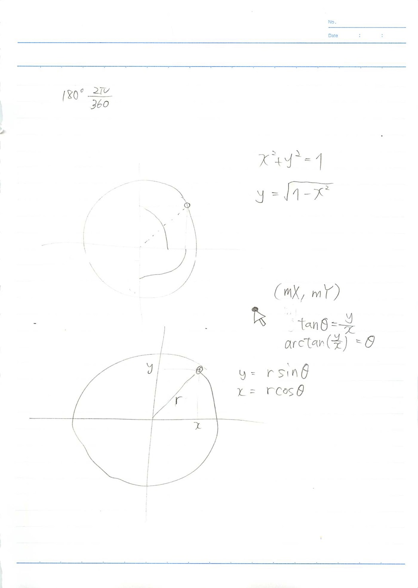

下書き

参考
http://jsfiddle.net/mellun0610/9mLggrv7/
https://ics.media/tutorial-createjs/displayobject_remove.html
https://qiita.com/maxima/items/d57d3e09632927739215
https://qiita.com/uto-usui/items/14a39c6981282bb62a0a